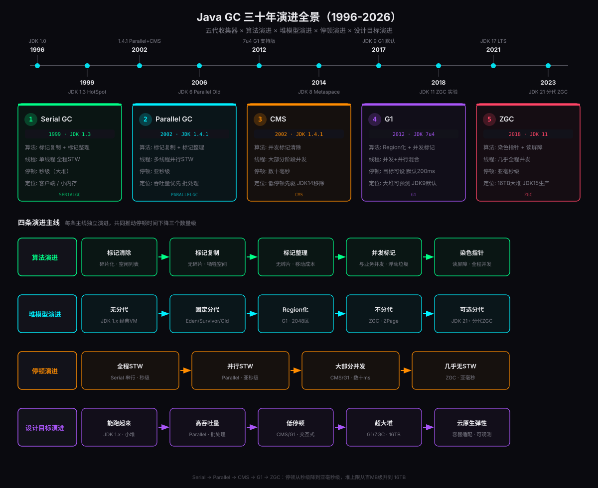
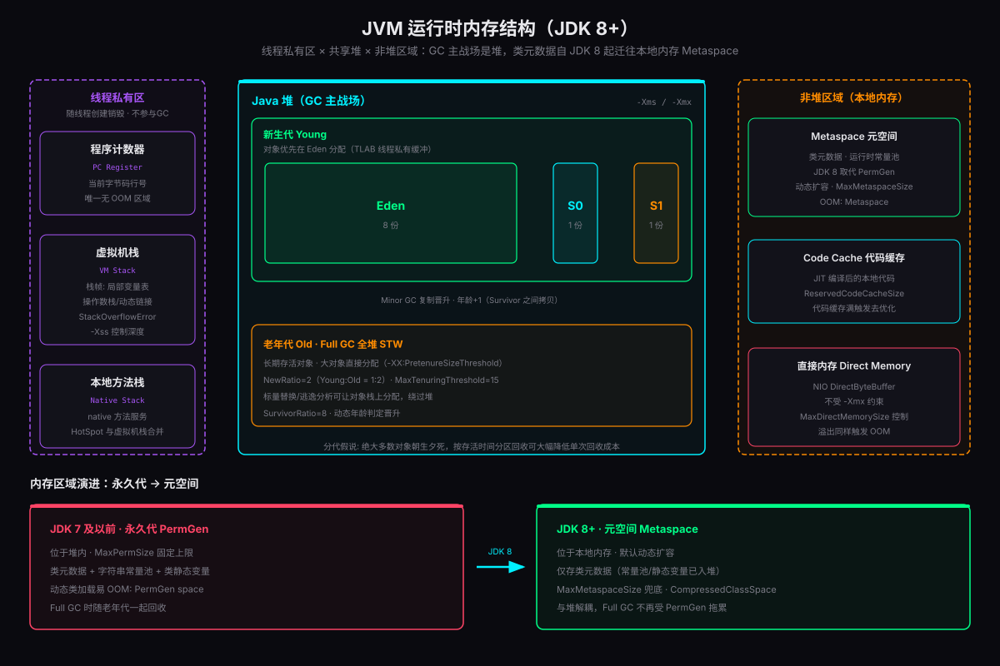
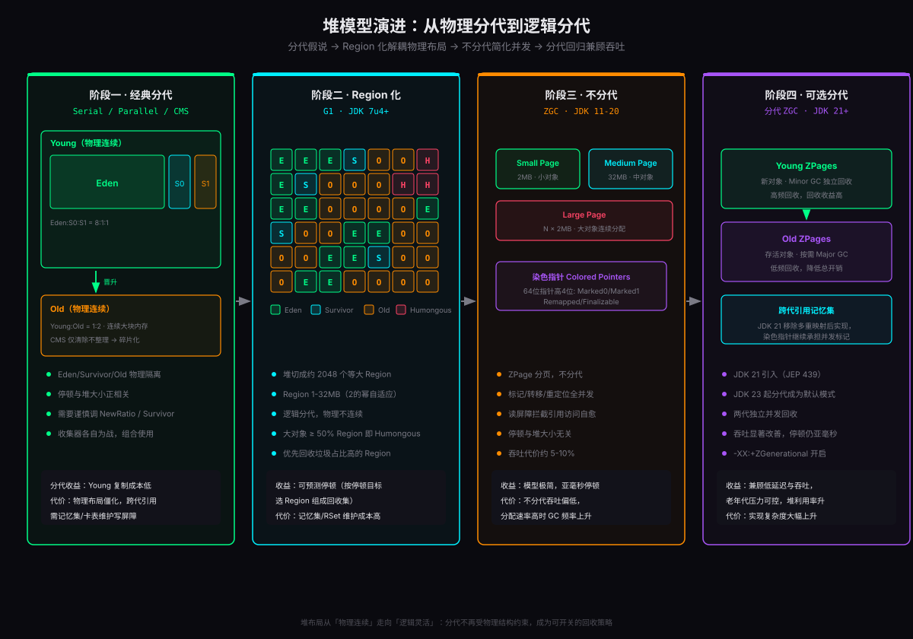

1996 年 Java 1.0 发布时，垃圾回收还只是一个「能跑起来」的工程妥协；三十年后，ZGC 已经能在 16TB 的堆上把停顿压进 1 毫秒以内。这背后不是某一次灵光乍现，而是算法、堆模型、并发策略三条战线持续三十年的协同演进。
很多工程师对 GC 的认知是碎片化的：知道 CMS 被移除了、知道 G1 是默认收集器、听说过 ZGC 很快，但串不起来。本文尝试把这条演进主线完整摊开——从内存管理模型、五大基础算法、五代收集器、堆模型变革、停顿演进到内存区域变迁，最后落到不同 JDK 版本在容器、微服务、低延迟、大内存四类环境下的生产级配置实战。
JVM 内存管理模型
谈 GC 之前必须先明确它的战场。JVM 运行时内存划分为若干区域，不同区域的生死周期和回收策略完全不同。

运行时数据区：谁参与 GC
JVM 规范定义的运行时数据区分为两类：线程私有的程序计数器、虚拟机栈、本地方法栈，与线程共享的堆和方法区。GC 的主战场只有堆——因为只有堆里的对象需要「自动回收」，其余区域随线程生灭，HotSpot 甚至把虚拟机栈和本地方法栈合二为一。
| 区域 | 归属 | GC 关系 | 关键参数 |
|---|---|---|---|
| 程序计数器 | 线程私有 | 不参与，唯一无 OOM 区域 | - |
| 虚拟机栈 | 线程私有 | 不参与，StackOverflowError | -Xss |
| 本地方法栈 | 线程私有 | 不参与（HotSpot 与 VM 栈合并） | - |
| 堆 | 线程共享 | GC 主战场 | -Xms / -Xmx |
| 方法区（Metaspace） | 线程共享 | 类卸载时参与 | MaxMetaspaceSize |
| 直接内存 | 进程级 | 不受 GC 直接管理，靠 Cleaner 间接回收 | MaxDirectMemorySize |
对象的一生：分配、晋升、回收
对象进入堆的路径比多数人想象的更有讲究：
- TLAB 分配：绝大多数对象通过线程私有分配缓冲区（Thread Local Allocation Buffer）在 Eden 区无锁分配，指针碰撞（bump-the-pointer）只需几条指令。
- 栈上分配：开启逃逸分析（JDK 7+ 默认开启）后，未逃逸的对象经标量替换直接拆散在栈上，随栈帧销毁，根本不进堆。
- 大对象直通老年代：经典收集器中超过
-XX:PretenureSizeThreshold的对象直接进 Old；G1 中超过 Region 一半的对象成为 Humongous，连续占用多个 Region。 - 年龄晋升：对象每熬过一次 Minor GC 年龄 +1，达到
MaxTenuringThreshold（默认 15）或触发动态年龄判定（同龄对象总大小超 Survivor 一半）即晋升 Old。
如何判定对象是垃圾
HotSpot 采用可达性分析而非引用计数：从 GC Roots（栈帧局部变量、静态变量、字符串常量池引用、JNI 全局引用、活跃线程对象等）出发标记存活对象，不可达即为垃圾。引用计数法因无法处理循环引用，从未被主流 JVM 采用。
配合四种引用强度，可以构建缓存类的柔性回收策略：强引用永不回收；软引用（SoftReference）内存不足才回收，适合缓存；弱引用（WeakReference）下次 GC 必回收，ThreadLocal 的 Entry 就是典型；虚引用（PhantomReference）形同虚设，唯一作用是对象回收时收到通知，用于堆外内存的清理（DirectByteBuffer 的 Cleaner）。
SafePoint：STW 的物理基础
Stop The World 并不是一个「开关」，而是所有业务线程跑到安全点（SafePoint）后挂起的协商过程。安全点通常位于方法调用、循环回跳、异常跳转处——保证此时线程的栈和寄存器状态是可枚举、可分析的。若某线程长时间运行在可数循环里未到安全点，会出现「其他线程全部停了等它」的 SafePoint 同步异常。理解这一点，就理解了为什么「停顿时间 = 主动挂起时间 + 等最慢线程的时间」。
GC 算法演进五部曲
五代收集器的更替，本质是五组基础算法的组合升级。
前三种：物理回收的三板斧
标记-清除（Mark-Sweep）是 1960 年代 McCarthy 为 Lisp 设计的最早算法：先从 GC Roots 标记存活对象，再统一回收未标记者。问题有两个：碎片化导致后续大对象分配困难；分配率波动时停顿时间不可预测。
标记-复制（Mark-Copy）把空间一分为二，每次只用一半，GC 时把存活对象复制到另一半后整体清空当前半区。复制成本只与存活对象数量成正比——对「朝生夕死」的 Young 代简直是量身定做。HotSpot 用 Eden:S0:S1 = 8:1:1 的改进方案把空间浪费从 50% 压到 10%。
标记-整理（Mark-Compact）先标记，再把所有存活对象向内存一端移动，最后清掉边界外的空间。无碎片、无空间浪费，但「移动对象」意味着要修正所有指向它们的引用，这只能在世界完全静止时才敢做——这就是老年代 Full GC 漫长的根本原因。
第四种：并发标记与三色标记法
要让 GC 和业务线程同时干活，必须解决「标记过程中对象引用关系还在变」的问题。业界将其抽象为三色标记：
- 白色：尚未访问，最终仍是白色即为垃圾
- 灰色：自己已标记，但成员引用还没扫描完
- 黑色：自己与所有成员都标记完成
并发场景下会产生漏标（存活对象被当垃圾回收，致命）和浮动垃圾（标记后才死掉的对象，本轮不回收，可容忍）。漏标的充要条件是：黑色对象新增了指向白色对象的引用，且该白色对象到灰色对象的引用链被删除。要打破它，CMS 用增量更新（记录新增引用，重新标记阶段重扫黑色对象），G1 用原始快照 SATB（记录被删除的引用，按标记开始时的快照处理）。两者的实现载体都是写屏障——编译器在每次引用赋值后插入的一小段 GC 协作代码。
第五种：染色指针与读屏障
ZGC 做得更彻底：直接把标记信息做进指针。64 位指针的高 4 位被征用为元数据位——Marked0、Marked1、Remapped、Finalizable。对象在转移期间，旧指针与新指针并存，业务线程读到旧指针时由读屏障当场「自愈」为正确地址。这样标记、转移、引用修正全部并发执行，应用线程全程只感知到几次纳秒级的指针检查。代价是每次对象引用读取都多几条指令，吞吐量比 Parallel GC 损失约 5%-10%。
五代收集器全解
Serial GC：一切的开端
单线程、全程 STW的收集器：Young 用标记-复制（Serial），Old 用标记-整理（Serial Old）。它的优点恰恰是「简单」——没有线程交互开销，在单核环境或百 MB 级小堆上反而是最高效的选择，因此至今仍是 client 模式和资源受限容器（JVM 自动判断 CPU 不足 2 核或内存不足 2GB 时）的默认选择。
大堆上它就是灾难：8GB 堆的 Full GC 停顿以秒计。ParNew 是它的多线程版（曾与 CMS 搭配，JDK 14 随 CMS 一同移除）。
Parallel GC：吞吐量时代
2002 年随 J2SE 1.4.1 登场的 Parallel Scavenge 首次引入多线程并行回收，配合 JDK 6 补齐的 Parallel Old，形成完整的并行分代组合。注意「并行」（Parallel）与「并发」（Concurrent）的区别：并行只是多个 GC 线程一起 STW 干活，业务线程仍然全停。
它的杀手锏是吞吐量优先的设计目标：用户代码时间 /（用户代码时间 + GC 时间）。通过 -XX:MaxGCPauseMillis（最大停顿）与 -XX:GCTimeRatio（GC 时间占比，默认 99 即 1%）两个目标加自适应策略（-XX:+UseAdaptiveSizePolicy），自动权衡新生代与老年代大小。批处理、离线计算、数据管道类任务至今仍首选它。
CMS：并发先驱，功成身退
CMS 同样诞生于 2002 年，目标是最短停顿。它把老年代回收拆成四段：初始标记（STW，只标 GC Roots 直连对象，极短）→ 并发标记（与业务并发，遍历对象图）→ 重新标记（STW，修正并发期间的变动，增量更新）→ 并发清除。全程只有两个短 STW。
但代价沉重：① 标记-清除不整理，碎片化最终触发 Full GC（Serial Old 单线程整理，停顿雪崩）；② 并发标记期间业务还得分配内存，老年代必须预留空间，触发「并发回收失败」直接退化 Serial Old；③ CPU 敏感，核少时并发线程抢占业务资源。这三个结构性缺陷让它在 G1 成熟后彻底失去存在价值——JDK 9 废弃，JDK 14 移除。
G1：Region 化革命
G1 在 JDK 7u4 转正、JDK 9 接棒默认收集器，是当下 Java 世界的事实标准。它解决的是 CMS 解决不了的问题：堆越来越大之后，停顿如何仍然可控。
核心变革是Region 化：堆被切成约 2048 个等大 Region（1-32MB，2 的幂自适应），Eden、Survivor、Old 不再是物理连续的大块，而是一组 Region 的逻辑集合，角色可以动态切换。回收时 G1 按每个 Region 的「回收价值（垃圾占比）」排序，在 -XX:MaxGCPauseMillis（默认 200ms）停顿目标的预算内，挑选尽可能多的 Region 组成回收集（Collection Set）——「Garbage First」的名字由此而来。
它的并发标记基于 SATB，跨 Region 引用用记忆集（RSet）维护，这是 G1 内存开销与 CPU 开销的主要来源。JDK 10 给 G1 补上了并行 Full GC（此前 Full GC 仍是单线程）。适用面极广：4GB-32GB 堆的微服务、网关、中间件通吃。
ZGC：亚毫秒时代
ZGC 是 Oracle 为 Azul C4 商业收集器的思路所做的开源实现，目标一句话：停顿时间不超过 1 毫秒，且与堆大小无关（支持从几百 MB 到 16TB 的堆）。它在 JDK 11 以实验特性引入，JDK 15 转正，JDK 21 借 JEP 439 加入分代支持。
技术支柱有三：① 染色指针（把标记位做进指针高 4 位）；② 读屏障（读引用时自愈旧地址，让对象转移也能并发）；③ ZPage 分页（Small 2MB / Medium 32MB / Large N×2MB）。标记、转移、重定位三大阶段全部并发，应用线程只在一轮 GC 开始与结束各停一次，每次约几十微秒。
早期 ZGC 不分代，靠高频全堆并发回收硬扛，分配率高的服务吞吐损失明显；JDK 21 分代版让 Young 独立高频回收、Old 按需回收，吞吐大幅改善，JDK 23 起分代成为默认模式。另有 Red Hat 主导的 Shenandoah 走「转发指针 + 读写屏障」路线达到相似目标，JDK 25 也迎来了分代版本。低延迟交易、实时风控、游戏服务端这类对尾延迟极度敏感的场景，ZGC 已经是标配答案。
五代收集器总对比
| 收集器 | 登场 | 核心算法 | GC 线程模型 | 典型停顿 | 最佳场景 | 现状 |
|---|---|---|---|---|---|---|
| Serial | JDK 1.3 | 复制 + 整理 | 单线程 STW | 秒级 | 小堆 / 单核 / client | 维护态 |
| Parallel | JDK 1.4.1 | 复制 + 整理 | 多线程并行 STW | 亚秒级 | 批处理 / 吞吐优先 | JDK 8 默认 |
| CMS | JDK 1.4.1 | 并发标记清除 | 并发 + 短 STW | 数十 ms | 曾为低停顿首选 | JDK 14 移除 |
| G1 | JDK 7u4 | Region + 并发标记 | 并发 + 并行可控 | 10-200ms 可设 | 通用大堆服务 | JDK 9+ 默认 |
| ZGC | JDK 11 | 染色指针 + 读屏障 | 几乎全并发 | < 1ms | 超低延迟 / 超大堆 | JDK 15+ 生产 |
堆模型演进：从物理分代到逻辑分代
收集器的更替必然重塑堆的物理形态。这条演进线比收集器本身更能说明 JVM 设计哲学的变化。

阶段一：经典物理分代
Serial、Parallel、CMS 时代，堆被物理地切成 Young（Eden + S0 + S1）与 Old 两大块，边界固定、各自连续。理论支柱是分代假说：绝大多数对象朝生夕死，按存活时间分区、区别对待，能显著降低回收成本。这套模型的代价是布局僵化——新生代比例调错了，要么 Young GC 过频，要么对象过早晋升撑爆 Old。
阶段二：G1 的 Region 化
G1 把「分代」从物理结构降级为逻辑标签：2048 个等大 Region 中，哪些归 Young、哪些归 Old 由运行时动态决定。分代的好处保留了，物理僵化消失了，还顺带获得停顿可控能力——回收粒度从「整代」细化为「任意 Region 组合」。跨 Region 引用靠 RSet 维护，这是灵活性的账单。
阶段三：ZGC 的不分代
ZGC 初期干脆放弃分代：为了把读屏障的复杂度压到最低，全堆用统一的 ZPage 管理，全并发地整体回收。模型极简、停顿极低，但不分代意味着无法利用「朝生夕死」规律，高分配率下 GC 循环被迫高频运转，吞吐明显吃亏。
阶段四：分代的回归
JDK 21 的分代 ZGC 证明了：分代假说没有过时，过时的只是物理分代的实现方式。Young/Old 变成两组独立的 ZPage，各自并发回收，染色指针与读屏障继续承担并发标记与转移。于是形成了有趣的螺旋上升：物理分代 → 逻辑分代 → 不分代 → 逻辑分代回归，每一圈都比上一圈更自由。
停顿演进：三个数量级的军备竞赛
停顿时间的下降不是线性优化，而是算法代际跳跃的结果。
| 时代 | 代表 | 停顿量级 | 停顿与堆大小的关系 | STW 阶段占比 |
|---|---|---|---|---|
| 串行 | Serial | 100ms - 10s | 正相关，堆越大越糟 | 100%（全程） |
| 并行 | Parallel | 100ms - 1s | 正相关，被并行度摊薄 | 100%（全程，更快） |
| 并发清除 | CMS | 10 - 100ms | 弱相关（碎片化风险） | 约 20%（两短段） |
| 并发整理 | G1 | 10 - 200ms | 可控（软目标） | 约 10%（Evacuation） |
| 全并发 | ZGC | < 1ms | 无关（16TB 堆同样亚毫秒） | < 1%（首尾两瞬） |
但停顿不是免费午餐，GC 设计存在经典的不可能三角：
三者最多取二。选收集器的第一问永远是：你的业务到底在 SLA 里承诺了什么。
内存区域演进：PermGen 之死
与堆内变革平行推进的，是方法区实现方式的大迁移。JDK 7 及之前，类元数据住在堆内的永久代（PermGen）——一个名字就带着违和感的区域：明明放的是类元数据，却按堆的分代逻辑管理，用 MaxPermSize 划了条死线。动态代理、脚本引擎、热部署框架大量生成类，动辄 java.lang.OutOfMemoryError: PermGen space，那是 2010 年代运维最熟悉的噩梦之一。
JDK 8 彻底移除 PermGen，类元数据迁往本地内存的Metaspace。核心变化有三：① 默认只受物理内存限制，按需扩容，用 MaxMetaspaceSize 兜底防泄漏；② 字符串常量池早已在 JDK 7 移入堆，类静态变量也随迁，Metaspace 职责更纯粹；③ 与堆解耦后，类元数据回收不再拖累 Full GC。PermGen 不是被修好的，是被整个拆掉的——与其给错误的抽象打补丁，不如换掉抽象本身。
主流 JDK 版本与默认 GC 大事记
把时间线钉在具体版本上，升级决策才有抓手：
| 版本 | 年份 | GC 相关大事 | 默认收集器 |
|---|---|---|---|
| JDK 8 | 2014（LTS） | PermGen 移除，Metaspace 登场；8u191+ 补齐容器感知 | Parallel |
| JDK 9 | 2017 | G1 接棒默认；CMS 废弃；统一日志 -Xlog 取代 PrintGC* 系列 | G1 |
| JDK 10 | 2018 | 容器感知默认开启（UseContainerSupport）；G1 并行 Full GC | G1 |
| JDK 11 | 2018（LTS） | ZGC、Shenandoah 以实验特性引入；Epsilon 无操作收集器登场 | G1 |
| JDK 14 | 2020 | CMS 正式移除；ZGC 支持 macOS / Windows | G1 |
| JDK 15 | 2020 | ZGC、Shenandoah 转为生产可用 | G1 |
| JDK 17 | 2021（LTS） | G1 持续优化（重建记忆集并行化等）；GC 生态稳定期 | G1 |
| JDK 21 | 2023（LTS） | 分代 ZGC（JEP 439）；G1 屏障向分代 ZGC 输出经验 | G1 |
| JDK 23 | 2024 | ZGC 分代模式成为默认，非分代模式废弃 | G1 |
| JDK 25 | 2025（LTS） | 紧凑对象头（JEP 519，对象头 12 字节 → 8 字节，堆占用降约 10%-20%）；分代 Shenandoah（JEP 521） | G1 |
生产环境最佳配置实战
调优四原则
- 先定目标再动手：吞吐 SLA → Parallel/G1；尾延迟 SLA → ZGC。没有指标的调优都是玄学。
- 少调比多调好：G1/ZGC 的自适应能力已经很强，手工干预新生代大小、晋升阈值往往是负优化；经典参数
SurvivorRatio、NewRatio只在 Serial/Parallel/CMS 上精细调。 - Xms = Xmx：固定堆大小，避免运行期扩缩抖动；对延迟敏感服务加
-XX:+AlwaysPreTouch启动时即触碰全部页。 - 日志与 dumps 先行：GC 日志和 HeapDump 参数必须在上线前配好，出事后再加等于裸奔。
场景一：JDK 8 容器化微服务（Parallel）
大量存量系统仍跑在 JDK 8 上。容器时代它最大的坑是内存感知：8u131 之前的 JVM 看不到 cgroup 限制，把宿主机内存当全世界；8u191 起才补齐 UseContainerSupport。所以 JDK 8 上容器配置的铁律是显式指定堆大小：
要点：ParallelGCThreads 在 2 核容器默认取 2 即可，不必手调；ExitOnOutOfMemoryError 让进程 OOM 即退出，交给 K8s 拉起健康实例，比带病运行强；堆外（Metaspace + DirectMemory + 线程栈 + CodeCache）合计预留 1GB 左右，4GB 容器配 1.5GB 堆是稳妥起点。
场景二：JDK 8 CMS 遗留系统（仅维护）
CMS 系统升级前需要稳住。核心是防并发回收失败——老年代必须在业务高分配率下也留有余量：
CMSInitiatingOccupancyFraction=70 + UseCMSInitiatingOccupancyOnly 固定在 70% 启动并发回收，留 30% 缓冲。若日志频繁出现 concurrent mode failure，优先加大堆或调低该值，而不是调线程数。终极方案只有一条：升级 JDK，用 G1 替换。
场景三：JDK 11/17 G1 标准微服务（推荐基线）
绝大多数在线服务的标准答案，4C8G 容器参考配置：
逐条说明：
- MaxGCPauseMillis=100：软目标而非硬承诺。设得过小（如 20ms）会迫使 G1 缩小年轻代、单次回收 Region 数减少，GC 频率上升反而伤吞吐。100ms 对多数在线服务是甜点位。
- IHOP=35：默认 45，高分配率服务可下调让并发标记更早启动，避免标记赶不上分配。该值 G1 会自适应调整，此参数是初始值。
- ConcGCThreads：并发线程默认约 ParallelGCThreads 的 1/4，容器内显式压到 1，避免并发阶段抢占业务 CPU。
- UseStringDeduplication：字符串去重，重复字符串多的服务能省可观堆空间（G1 专属福利）。
- Xlog 统一日志：JDK 9+ 请忘记
PrintGCDetails（会打 warning），一套-Xlog:gc*全搞定，还带轮转。
场景四：JDK 21+ ZGC 低延迟服务
交易、风控、推送、实时风控大屏这类 P999 不能超过个位数毫秒的服务：
几个 ZGC 特有的心法：
- 堆要给足：并发回收期间业务还在分配，ZGC 官方建议堆余量为存活集的 2-3 倍。拿 G1 的「堆 = 存活集 × 1.5」经验直接套 ZGC 会翻车。
- SoftMaxHeapSize：软上限。ZGC 会努力把用量压在 8G 以内，超了才扩到 10G——比直接 -Xmx8g 多了弹性空间。
- ZUncommit：空闲内存归还操作系统，云上按时计费场景的真金白银。K8s HPA 联动时也避免容器内存水位虚高。
- JDK 23+ 无需
ZGenerational：分代已是默认；JDK 21/22 必须显式开启，否则跑的是不分代模式。 - 小堆别用 ZGC：几 GB 以下且不在意 100ms 停顿的服务，G1 综合表现更好，ZGC 的并发开销在小堆上得不偿失。
场景五：大内存批处理
离线计算、数仓 ETL、模型训练预处理——吞吐就是一切：
批处理堆里常有巨型集合与数组，G1 方案把 Region 调到 16MB 能显著减少 Humongous 对象（超过 Region 一半即 Humongous，会直接进 Old 且清理成本高）。GCTimeRatio=19 表示 GC 时间目标占比 1/(19+1)=5%。
云原生容器适配清单
-XX:MaxRAMPercentage=70.0 替代 -Xmx，单 JVM 独占容器可到 75.0。切记 Metaspace、DirectMemory、CodeCache、线程栈都不在百分比内，K8s limit 要留白。-XX:ActiveProcessorCount 显式声明。-XX:+ExitOnOutOfMemoryError。比进程僵死卡满整个 SLA 强得多。JDK 8 用 -XX:+CrashOnOutOfMemoryError 时注意与 kill 信号语义差异。+ZUncommit；G1（JDK 12+）用 -XX:G1PeriodicGCInterval=300000 触发周期性并发回收并配合 -XX:G1PeriodicGCSystemLoadThreshold 空闲判断，低峰期归还内存给 OS，配合云成本优化。上线前检查清单
- 堆大小固定（Xms=Xmx），容器内存 limit ≥ 堆 + 堆外开销总和，留 25% 余量
- 收集器与业务目标匹配：吞吐型 Parallel / 均衡型 G1 / 延迟型 ZGC
- GC 日志开启并轮转（JDK 9+ 用 -Xlog:gc*，JDK 8 用 PrintGC 系列 + 轮转）
- HeapDumpOnOutOfMemoryError + HeapDumpPath 指向持久卷
- MaxMetaspaceSize 已设上限，防止类加载泄漏打爆容器
- ExitOnOutOfMemoryError 已加，K8s liveness/readiness 探针已配
- 压测验证过峰值分配率下的 GC 行为，Full GC 次数为零或可解释
- Grafana/ARMS 接入了 GC 指标（停顿分布、频率、堆趋势），看板可查
结语
回望这三十年，Java GC 的演进遵循着一条清晰的主线：不断把原来必须停顿的工作搬到并发侧，同时不断放大「堆」能安全达到的上限。算法上，从标记清除的碎片，到复制整理的空间换时间，到三色标记打破串行，再到染色指针把标记做进指针本体；堆模型上，从物理分代到 Region 化再到分代的螺旋回归；设计目标上，从「能跑起来」一路演进到云原生时代的弹性与可观测。
对工程师而言，这三十年的积累可以压缩成三个决策问题：我的 SLA 承诺的是吞吐还是延迟？我的堆有多大、分配率有多高？我用的 JDK 版本能选什么？三问之后，答案往往唯一。GC 调优没有银弹，但有谱系——理解演进脉络的人，能在任何一个版本上做出不离谱的配置决策。
下一个十年，GC 竞赛还在继续：紧凑对象头在 JDK 25 落地，分代 Shenandoah 补全最后一块拼图，而 GC 日志、JFR 与 OpenTelemetry 的融合正在把「可观测」变成一等公民。唯一确定的是，Stop The World 的疆域会继续收缩，直到只剩历史意义。
参考资料
- Oracle · Garbage-First Garbage Collector Tuning docs.oracle.com — G1 Tuning
- OpenJDK · ZGC 官方 Wiki（设计目标、染色指针、堆范围） wiki.openjdk.org — ZGC Overview
- Oracle · The Z Garbage Collector（JDK 17 调优指南） docs.oracle.com — ZGC
- JEP 439 · Generational ZGC openjdk.org — JEP 439
- Oracle · Java SE 8 G1（7u4 起正式支持） docs.oracle.com — G1 in JDK 8
- JetBrains · Java 25 LTS 特性综述（JEP 519 紧凑对象头、JEP 521 分代 Shenandoah） blog.jetbrains.com — Java 25 LTS
- InfoQ · Java 25 Integrates Compact Object Headers infoq.com — Compact Object Headers